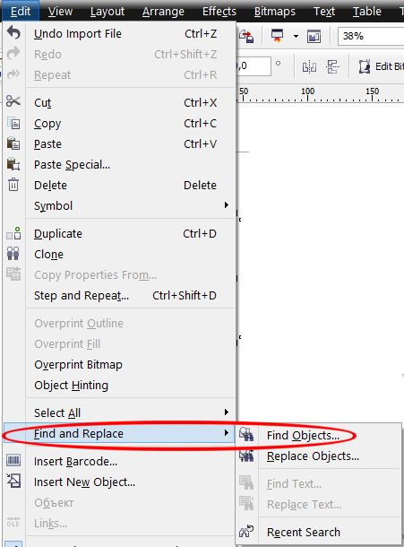
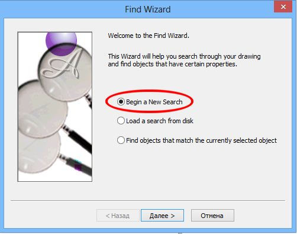
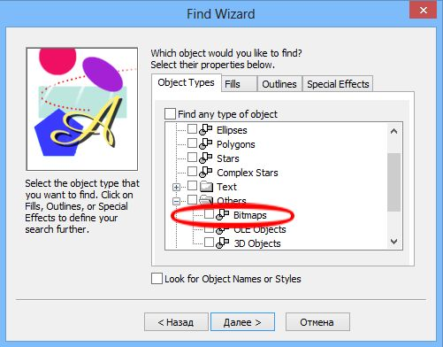

Корел ругается на изображение с 96 dpi. Как его найти это изображение?
snml / 13.04.2013, 15:35
Форум:
Версия программы:
16.0.0.707
Корел ругается на изображение с 96 dpi.
Как его найти это изображение?
Корел ругается на изображение с 96 dpi.
Как его найти это изображение?

Ручками через Менеджер объектов, а если нужно постоянно, то можно через макрос Внутренняя ссылка
а если руками, через менеджер объектов, то как его там можно найти?
там же тысячи этих объектов. может фильтр какой то есть? или как?
или хотя бы как в этом менеджере отобразить только одни изображения, без кривых и прочего?
и еще как в изображении посмотреть, сколько в нем dpi?
Можно просто, через Поиск и задать искать только растровые изображения. Это раз. А посмотреть, сколько там dpi, можно через докер Свойства Объекта (Alt + Enter). Это два. :-)
а где этот поиск? я не нашел
snml! Это как Вы не нашли Поиск? Вы наверное Корел 1-й или 2-й раз в жизни используете?
Делаем так:
1. Edit > Find and Replace > Find Objects (рис. 1).

Откроется Мастер Поиска.
2. В Мастере Поиска выбираем, как на рис. 2.

Жмем Далее.
3. Находим в списке Растровые изображения и ставим флажок (рис. 3)

Потом жмем Далее и Далее....
Корел найдет первое попавшееся изображение и автоматически выделит его. Также появится Панель инструментов, с помощью которой можно продолжить поиск и Корел будет поочереди находить и выделять растровые объекты. У Вас должен быть открыт докер Свойства Объекта, в котором и будет отображаться разрешение выделенного растрового изображения.
Спасибо за подробное объяснение!
Сделал, все как написано, в результате поиском нашел 5 растровых объектов на первой странице и 3 растровых объекта на второй странице. Ни у одного из них, правда, не было разрешения меньше 96 dpi (у всех было намного больше), смотрел через Свойства объекта.
Попробовал жать кнопку "Найти все объекты", корел вроде бы что то спросил про вытаскивание из группы - я сказал "Да", но в результате все то же самое. Нет этого изображения.
Где оно еще может быть???
Или, раз его нет среди растровых объектов, то это не так существенно?
Может у Вас сам документ имеет разрешение меньше 96 dpi? Также, если Вы настроили Поиск (точнее кажись по умолчанию, но точно не помню) на изображения RGB 24-bit, а там есть какие-то другие растровые изображения, то Корел может их проигнорировать во время поиска.
а можно подробнее, где посмотреть разрешение документа?
и как настроить поиск, чтобы попадали все изображения?
Страницы